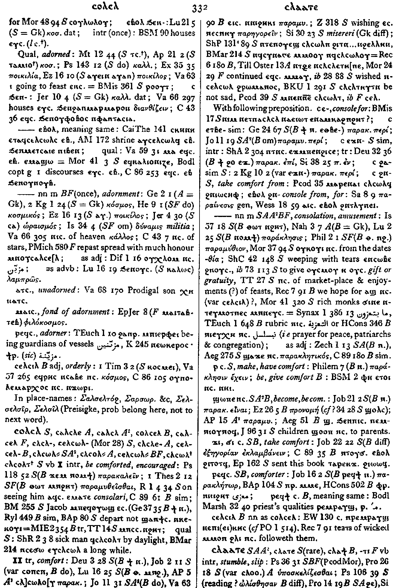
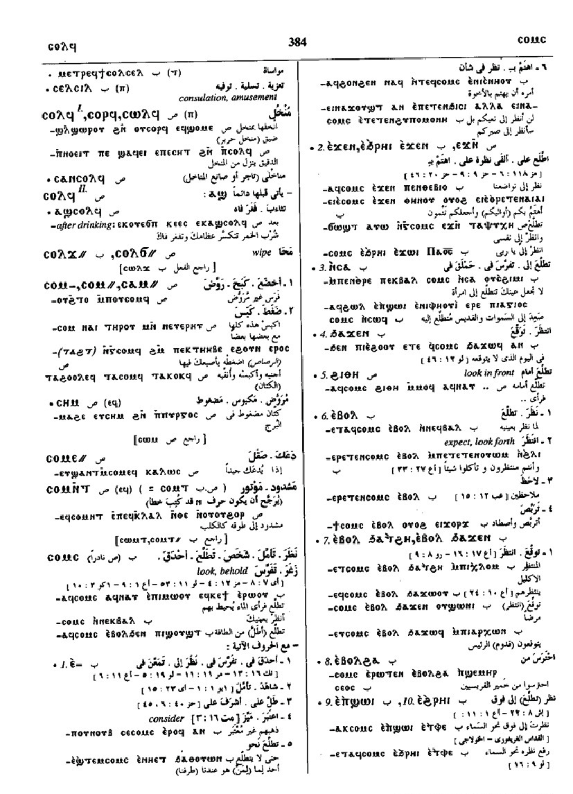

(verb)
intr: be comforted, encouraged [παρακαλειν, παραμυθεσθαι]
tr: comfort [παρακαλειν]
tr: comfort [παρακαλειν]
(S)
ⲥⲟⲗⲥⲗ
(A) ⲥⲁⲗⲥⲗⲉ
(sA) ⲥⲁⲗⲥⲗ
(B) ⲥⲟⲗⲥⲉⲗ
(F) ⲥⲁⲗⲥⲉⲗ
(S) ⲥⲗⲥⲗ-, ⲥⲉⲗⲥⲱⲗ-
(A) ⲥⲗⲥⲗⲉ-
(B) ⲥⲉⲗⲥⲉⲗ-
(S, sA) ⲥⲗⲥⲱⲗ=
(A) ⲥⲗⲥⲟⲗ=
(B, F) ⲥⲉⲗⲥⲱⲗ=
(S) ⲥⲗⲥⲱⲗ+, ⲥⲗⲥⲟⲗⲧ+
(A) ⲥⲁⲗⲥⲗⲉ
(sA) ⲥⲁⲗⲥⲗ
(B) ⲥⲟⲗⲥⲉⲗ
(F) ⲥⲁⲗⲥⲉⲗ
(S) ⲥⲗⲥⲗ-, ⲥⲉⲗⲥⲱⲗ-
(A) ⲥⲗⲥⲗⲉ-
(B) ⲥⲉⲗⲥⲉⲗ-
(S, sA) ⲥⲗⲥⲱⲗ=
(A) ⲥⲗⲥⲟⲗ=
(B, F) ⲥⲉⲗⲥⲱⲗ=
(S) ⲥⲗⲥⲱⲗ+, ⲥⲗⲥⲟⲗⲧ+
| With following preposition:6171 | Crum: 332b | ||||||||
| ⲉ- (c) | console for6172 | ||||||||
| ⲉⲧⲃⲉ- (c) | sim6173 | ||||||||
| (S) ⲉϫⲛ- (c) | sim6175 | ||||||||
| (S) ϩⲁ- (c) | sim6174 | ||||||||
| (S) ϩⲛ- (c) | take comfort from6176 | ||||||||
| (S, A, sA, B, F) ― (ⲡ) | (noun male)
consolation, amusement [παρακλησισ]1768 |
||||||||
| (S) ⲣ ⲥ. | make, have comfort
be, give comfort1769 |
||||||||
| (S, sA, B) ϣⲱⲡⲉ ⲛⲥ. | become, be comfort1770 | ||||||||
| (S, B) ϫⲓ ⲥ., ϭⲓ ⲥ. | take comfort1771 | ||||||||
| (S, B) ⲣⲉϥⲥ. | comforter [παρακλητωρ]1772 | ||||||||
| (B) ⲣⲉϥϯ ⲥ. | meaning same1773 | ||||||||
| (B) ⲥⲉⲗⲥⲓⲗ (noun) | (noun)
as ⲥⲟⲗⲥⲉⲗ1774 |
||||||||
Crum: 332

332
Dawoud: 383a-384a

383

384